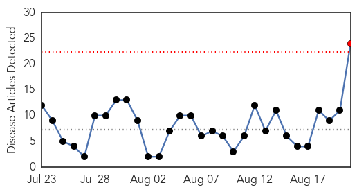
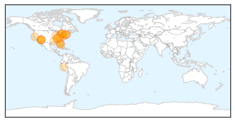
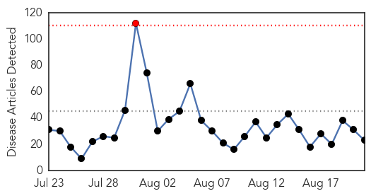
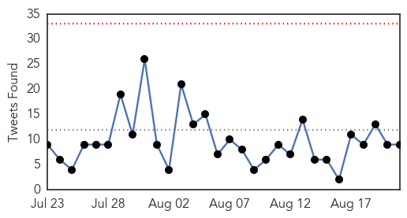
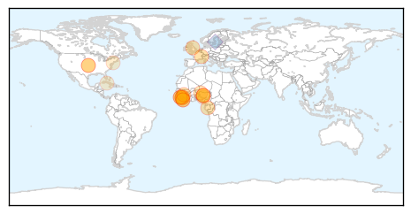

West Nile Virus
30-Day Web Trend
1 alerts, 0 warnings

30-Day Twitter Trend
0 alerts, 0 warnings

Article Locations
Article Confidences

Top Articles:
- 0.997
- TPH confirms first case of West Nile virus in Toronto this year
- 0.996
- 4 deaths in Arizona prompt mosquito concerns
- 0.994
- 3 human cases of West Nile virus reported in Tennessee, including one in Blount
- 0.991
- Maricopa County Investigating Mosquito-Borne Outbreaks, West Nile Virus, Encephalitis
- 0.989
- District reports first West Nile virus case this summer
- 0.977
- West Nile Virus case confirmed in Toronto resident
- 0.972
- West Nile Virus Found in 15 Connecticut Communities
- 0.970
- Napa bird found with West Nile Virus
- 0.963
- Toronto confirms first human case of West Nile virus this year
- 0.959
- Pinellas Issues West Nile Virus Advisory
- 0.940
- It’s Mosquito Season; Take Precautions to Stay Safe from Diseases
- 0.939
- Will County reports spike in West Nile mosquitoes
- 0.888
- Human case of West Nile virus found in Madison County
- 0.869
- West Nile virus activity increasing, state warns
- 0.835
- Sizable Increase in West Nile-Positive Mosquitoes
- 0.819
- 3 human cases of West Nile virus reported in Tennessee, including one in Blount. News Source
- 0.804
- 20 West Nile virus infections diagnosed so far this year
- 0.801
- Mosquitos test positive for West Nile in Flanagan; dead bird in Peru
- 0.792
- The Arlington Health Department Informs Residents On Mosquito Bites & Breeding
- 0.757
- Three in TN test positive for West Nile virus, 1 in East TN
- 0.722
- Mosquito-borne illness advisory issued in Pinellas
- 0.708
- Three in TN test positive for West Nile virus
- 0.643
- Health department urges residents to be vigilant against mosquitos
- 0.639
- Maricopa County seeing 2 mosquito-borne outbreaks
Top Tweets:
-
No tweets found for Aug 21, 2015
Ebola
30-Day Web Trend
1 alerts, 0 warnings

30-Day Twitter Trend
0 alerts, 0 warnings

Article Locations
Article Confidences
Top Articles:
- 0.999
- Zero New Ebola Cases Reported in Sierra Leone For the First Time Since Initial Outbreak
- 0.995
- WHO to shake up global response to epidemics after Ebola
- 0.981
- Bellevue Ebola patient upgraded to stable condition: officials
- 0.978
- Exploring fear to regain trust: Getting children to health care in Sierra Leone
- 0.968
- World Bank, GOL Sign US$115M Grant Deal
- 0.952
- NYC names hotel as source of deadly Legionnaires' outbreak
- 0.950
- Liberian Lawmaker Latest to Cross Atlantic for Medical Care
- 0.930
- Real chance that Ebola has been beaten in Sierra Leone
- 0.930
- Guinea gives masterclass in how to bounce back from Ebola. Starting a business takes just 72 hours; this year expect 4,000 new ones
- 0.862
- Ebola: How the Prescription of a King in Kogi State Sparked the Scramble for Salt-Water Bath
- 0.848
- Paper-based Tests for Infectious Diseases
- 0.837
- ‘My mother would have forgiven Sawyer’
- 0.782
- LIBERIA: Prelate Says Ebola Requires ‘God’s Intervention’
- 0.755
- What an Ebola Fighter Looks Like
- 0.713
- Stranded survivors, ‘embezzled’ donor funds prove Liberia’s post-Ebola recovery hasn’t begun
- 0.691
- Nigeria Earned Global Recognition Among Comity Of Nations Over Ebola ...Linus Awute
- 0.688
- Health Ministry mid-year review kicks off - Sierra Leone
- 0.668
- Is the end near? — SOS Children
- 0.637
- Teen's killing highlights crime wave in Ebola-hit Sierra Leone
- 0.604
- Dr. Nancy Synderman to host N.J. healthcare panel in 1st event since leaving NBC
- 0.600
- Nigerian News from Leadership News
- 0.586
- Sierra Leone News: Ban on all secret societies still in place -NERC Warns « Awoko Newspaper
- 0.581
- Ellen Bids Farewell to Cuban Ambassador, Heralds Assistance
Top Tweets:
- 0.970
- Protecting The Most Vulnerable in Sierra Leone's Latest Ebola Outbreak - Huffington Post UK http://t.co/Y4PpeoWwkc ebola EVD
- 0.949
- The first week w/ no new Ebola cases in Sierra Leone, since the begining of the outbreak in W. Africa. Weekly update http://t.co/c0JobZyqcG
- 0.949
- Help stop Ebola ... - Gridley Herald http://t.co/ZF9pNe4GnB ebola EVD
- 0.906
- Teen's killing highlights crime wave in Ebola-hit Sierra Leone - Reuters http://t.co/JYCRPxDKqS ebola EVD
- 0.838
- RT: .@WHO's Ebola report for the week ending August 16: 3 cases in Guinea, 0 in Sierra Leone and Liberia. http://t.co/md6a…
- 0.826
- The Ebola Epidemic Is Coming to an End. Don't Celebrate. - Slate Magazine (blog) http://t.co/Vv3wdSrkdB ebola EVD
- 0.822
- Ebola research shows the value of vaccines - CNN International http://t.co/scmYCuwzjR ebola EVD
- 0.794
- Protecting The Most Vulnerable in Sierra Leone's Latest Ebola Outbreak - Huffington Post UK http://t.co/JU12LxbGYA
- 0.777
- What an Ebola Fighter Looks Like - Huffington Post http://t.co/LNrzJj1zm8 ebola EVD
- 0.697
- Killing of 17-year-old highlights crime wave in Ebola-hit Sierra Leone - The Globe and Mail http://t.co/IagKM8H0Mp ebola EVD
- 0.694
- New hygiene protocols keep classrooms in West Africa free of Ebola and other infections http://t.co/5qGO40RYLr
- 0.687
- Paul G. Allen Ebola Program unveils containment units to reduce biohazard risks - SFGate (blog) http://t.co/Uht8p1Yxy9 ebola EVD
- 0.676
- 21 Aug - news pouch on avianflu avianinfluenza Ebola EbolaResponse MERS is here: http://t.co/1qmlrfWOSJ
- 0.646
- At the 1-1-7 Ebola Call Center in Freetown, over 100 operators answer questions about Sierra Leone’s outbreak 24/7: http://t.co/dyWEYgriEb
- 0.557
- A Conversation With - Godwin Akpan, Ebola Data Analyst - http://t.co/NaiI6Jl8yj http://t.co/zJZYgBeJmi ebola EVD